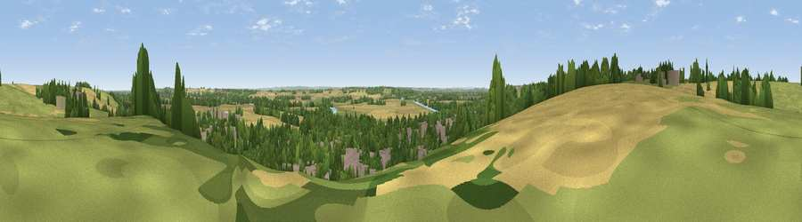

Viewpoint near Burton Joyce
#27136 in England · top 34% of its area beats it · near Burton JoyceThe view, rendered

A 360° render of this exact spot computed from the terrain model, tree cover and land cover — summer colours, afternoon light, calibrated against photographs of famous viewpoints. Real trees, hedges and buildings will differ in detail.
The panorama
Grey silhouette: terrain skyline in each direction (720 bearings, Earth curvature and refraction included). Dashed green: skyline with trees (+15 m) and buildings (+8 m) as obstacles. Blue strip: how far the ground is visible on each bearing.
Where the view opens
Wedge length = distance to the farthest visible ground on that bearing (vegetation-aware). Rings at 10, 25 and 50 km.
What fills the view
37% woodland · 22% built-up · 21% cropland · 18% grassland · 1% water
Angular shares of the visible panorama (visual magnitude), not map area. Landscape diversity 0.61 (0–1 Shannon).
Key numbers
More beautiful places nearby
The staircase of upgrades: each row has a higher view potential than everything closer. Driving times are estimates from straight-line distance, calibrated against real road routing — check an actual route before setting out.
| Place | Direction | Drive | Score |
|---|---|---|---|
| North Viewing Platform | W · 3 km | ~7 min | 51.3 |
| Viewpoint near Lambley | W · 3 km | ~8 min | 53.1 |
| Old Hill | E · 5 km | ~11 min | 54.7 |
| Viewpoint near Kneeton | ENE · 5 km | ~12 min | 61.5 |
| Viewpoint near Arnold | WNW · 6 km | ~13 min | 64.1 |
| Viewpoint near Stathern | SE · 19 km | ~32 min | 67.2 |
| Viewpoint near Belvoir | SE · 20 km | ~34 min | 68.9 |
| Viewpoint near Belvoir | ESE · 20 km | ~34 min | 70.8 |
52.99366, -1.03194 · source: screening · position refined by local search. Computed location — check access rights before visiting.